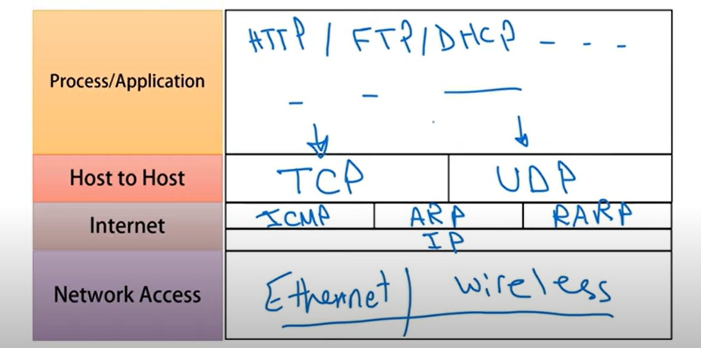

Transmission Control Protocol / Internet Protocol
دا ال البروتوكول المستخدم في شبكه ال Internet و معظم شبكات ال LAN’s النموذج دا اللي عمله Department of Defense (DOD) او وزاره الدفاع الامريكيه و بيتكون من 4 layers
Application
-
الوظيفة: واجهة التطبيقات مع الشبكة — يعني البروتوكولات اللي التطبيقات بتستخدمها لطلب خدمات الشبكة.
-
أمثلة: HTTP, HTTPS, FTP, SMTP, DNS, Telnet, SSH.
-
مقابله في OSI: يجمع Application + Presentation + Session.
اهم البروتوكولز المستخدمه
HTTP (TCP 80) HyperText Transfer Protocol
دا البروتوكول المستخدم عشان توصل لصفحات الويب بس مش بيبقى فيه امان على انتقال الداتا من ال
Client → Web Server
HTTPS (TCP 443)
شبهHTTP بس بيستخدم protocol تاني (TCP 465) SSL (Secure Socket layer) بيخلي عمليه الTransmission Encrypted وعمليات ال Encryption بتتم من خلال حاجه اسمها Certificate و ال SSL بيستخدم X.509 Certificate في Protocol تاني بيعمل نفس الوظيفه بس ب Mechanism مختلف هو (TCP 995) TLS Transport Layer Security
Transport (Host to Host)
-
الوظيفة: نقل البيانات بين المضيفين، توفير موثوقية أو نقل سريع غير موثوق.
-
أمثلة: TCP (موثوق، ترتيب، تحكم تدفق)، UDP (غير موثوق، أسرع، مناسب للصوت/فيديو).
-
مقابله في OSI: طبقة النقل (Layer 4).
اهم البروتوكولز المستخدمه
البروتوكولز دي بتستخدم في نقل الداتا من طبقه ل طبقه
TCP (Transmission Control Protocol) Connection Oriented
هنا معنى كلمه connection oriented ان البروتوكول بيعمل اقصى جهده عشان يتاكد ان الداتا اللي بعتها اليوزر وصلت لل destination من خلال Error Deduction و حاجات تانيه هتتشرح بالتفصيل بعدين
UDP (User Datagram Protocol) Connectionless
هنا هو مش بيضمن ال Integrity خالص هو بس بيبعت الداتا وخلاص بس دا مش معناه انه وحش لا بيبقى هو المفضل في بعض انواع الخدمات زي ال Live Streaming لانه هو الاسرع وفي حاله ال live بيتم تفضيل ال سرعه على Integrity
بروتوكولز خاصه بنقل الملفات
FTP (File Transfer Protocol) (TCP 20, 21)
دا من اسمه بروتوكول نقل الملفات و بيعتمد على ال TCP يعني بيضمن الوصول
TFTP (Trivial File Transfer Protocol) (UDP 69)
دا بردو بينقل الملفات بس بيعتمد على ال UDP ف بيضمن سرعه الوصول
SFTP (Secure) (TCP 22)
SCP (Secure Control Protocol) (TCP 22)
بروتوكولز خاصه بنقل الايميلات
SMTP (Simple Mail Transfer Protocol) (TCP 25)
دا البروتوكول المسئول عن توصيل رساله ال Mail لل Mail Server و لما نوصل لل Mail Server اللي المفروض يبعت لل Destination بنستخدم البروتوكول اللي جي
POP3 (Post Office Protocol) (TCP 110) (3 دا رقم احدث نسخه )
البروتوكول دا بيحمل الرساله من Mail Server ل للجهاز ف لو حصل مشكله في الجهاز مش هيقدر يسترجع الرسايل عشان كدا في protocol تاني بيحل المشكله دي عن طريق انه عنده option الاختيار سواء تسيب الرساله على السيرفر او تحملها على جهازك وهو
IMAP (Internet Message Access Protocol) (TCP 143)
Internet
-
الوظيفة: توجيه الحزم عبر الشبكات المختلفة، عنونة بين المضيفين.
-
أمثلة: IP (IPv4, IPv6)، بروتوكولات مساعدة: ICMP, IGMP.
-
مقابله في OSI: تقريبيًا طبقة الشبكة (Layer 3).
اهم البروتوكولز المستخدمه Network Protocols
DHCP (Dynamic Host Configuration Protocol) (UDP 67)
الجهاز بيبقى محتاج IP, DG (default gateway) و configuration تانيه دا ممكن يتعمل Manually عن طريق System administrator بس لو عدد الاجهزه كتير هيبقى صعب يتعمل يدوي ف بيتعمل سيرفر اسمه DHCP Server دا لما يتوصل بجهاز بياخد ال configuration اللي تخليه يتصل بالانترنت automatically
DNS (Domain Name System) (TCP & UDP 53)
لما تيجي تطلب server معين اكيد مش لازم تبقى حافظ ال IP بتاعه لا ممكن توصله بالاسم او ال domain و اللي مسئول عن تحويل ال domain دا ل IP هو ال DNS (هيتشرح بالتفصيل قدام)
NTP (Network Time Protocol) (UDP 123)
دا مسئول عن عمليه Synchronization يعني مثلا ساعات بيحصل ايرورز بسبب اختلاف الوقت بين ال Request و ال response ف البروتوكول دا هو المسئول عن تجنب المشكله دي
اهم ال Network Management Protocols
SNMP (Simple Network Management protocol ) (UDP 161)
دا اشهر protocol مستخدم في ال Monitoring مراقبه الاجهزه اللي في الشبكه دا في النيتورك مثلا بيجيبوا Central Computer بيستخدم ال Protocol دا عشان يتابع حاله الاجهزه
Telnet (TCP 23)
دا كان بيستخدم في التحكم في جهاز تاني داخل الشبكه بس مشكلته انه مش Secure لو hacker intercepted the connection هيعرف الداتا اللي رايحه و اللي جايه
SSH (Secure Shell) )(TCP 22)
دا النسخه ال Secured من ال Telnet ملحوظه
رقم البورت متشابه مع بروتوكول SFTP ودا عشان ال SFTP مبني على ال SSH
Telnet & SSH used by CMD (Command Line)RDP (Remote Desktop Protocol) (TCP 3389)
زي ال SSH بس GUI مستخدم على اجهزه Windows و الاكثر استخداما
اهم ال Control Protocols
ICMP (Internet Control Message Protocol)
مثال دلوقتي في جهازين في شبكتين مختلفين عايزين يتصلوا ببعض اول جهاز هيبعت ال request لل router بتاعه هيبعت للراوتر التاني هنفترض ان الراوتر التاني offline ف دلوقتي راوتر الجهاز الاول عايز يبعت للجهاز بتاعه ان الجهاز التاني offline هيبعتله رساله اسمها Destination Host Unreachable و دي بيبعتها من خلال ال protocol دا يعني من الاخر بيشوف ال Connectivity
ملحوظه مش ال ping بردو بيستخدم في نفس الكلام ركز ال ping مش protocol ال ping هو application بيستخدم ICMP بيعمل connection اسمه echo / response
IGMP (Internet Group Message Protocol)
عندنا 3 انواع من connections
Unicast الاتصال بيروح لل الوجهه مباشره
broadcast الاتصال بيروح لكل الاجهزه والمقصود يقبل
multicast بيستخدموه في الحاله دي بيبقى من جهاز لاكتر من جهاز IGMP ال
ال Multimedia / Communication protocols
SIP (Session Initiation protocol) (TCP/UDP 5060/ TCP/5061)
RTP (Real Time Transport Protocol) (UDP 5004/ TCP 5005)
دا واللي قبله بروتوكولات خاصه بال audio , video , online games, chating
Network access / link
-
-
الوظيفة: التعامل مع الوسيط الفيزيائي وإطار البيانات (frames) وطرق الوصول (MAC).
-
أمثلة: Ethernet, Wi-Fi (IEEE 802.11), ARP (لربط IP إلى MAC).
-
مقابله في OSI: يجمع Data Link (Layer 2) و Physical (Layer 1).
-
دي صوره بتوضح استخدام بعض البروتوكولات في الطبقات بتاعتها
